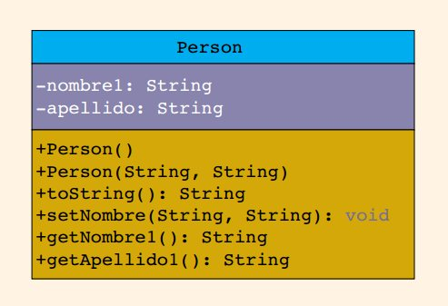
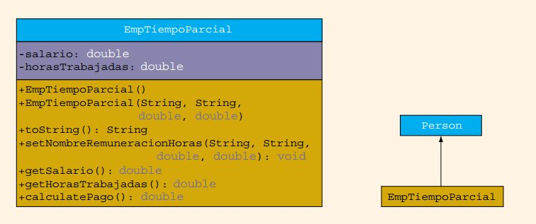
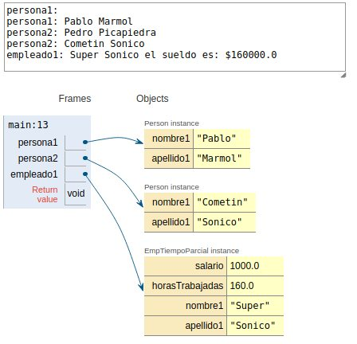
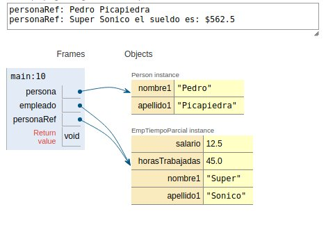

!pip3 install tutormagic
%load_ext tutormagic
Requirement already satisfied: tutormagic in /home/tigarto/miniconda3/lib/python3.7/site-packages (0.3.0)
Requirement already satisfied: notebook>=3.0 in /home/tigarto/miniconda3/lib/python3.7/site-packages (from tutormagic) (6.0.1)
Requirement already satisfied: ipython-genutils in /home/tigarto/miniconda3/lib/python3.7/site-packages (from notebook>=3.0->tutormagic) (0.2.0)
Requirement already satisfied: nbconvert in /home/tigarto/miniconda3/lib/python3.7/site-packages (from notebook>=3.0->tutormagic) (5.6.1)
Requirement already satisfied: pyzmq>=17 in /home/tigarto/miniconda3/lib/python3.7/site-packages (from notebook>=3.0->tutormagic) (18.1.1)
Requirement already satisfied: terminado>=0.8.1 in /home/tigarto/miniconda3/lib/python3.7/site-packages (from notebook>=3.0->tutormagic) (0.8.3)
Requirement already satisfied: tornado>=5.0 in /home/tigarto/miniconda3/lib/python3.7/site-packages (from notebook>=3.0->tutormagic) (6.0.3)
Requirement already satisfied: nbformat in /home/tigarto/miniconda3/lib/python3.7/site-packages (from notebook>=3.0->tutormagic) (4.4.0)
Requirement already satisfied: prometheus-client in /home/tigarto/miniconda3/lib/python3.7/site-packages (from notebook>=3.0->tutormagic) (0.7.1)
Requirement already satisfied: ipykernel in /home/tigarto/miniconda3/lib/python3.7/site-packages (from notebook>=3.0->tutormagic) (5.1.3)
Requirement already satisfied: jupyter-core>=4.4.0 in /home/tigarto/miniconda3/lib/python3.7/site-packages (from notebook>=3.0->tutormagic) (4.6.1)
Requirement already satisfied: traitlets>=4.2.1 in /home/tigarto/miniconda3/lib/python3.7/site-packages (from notebook>=3.0->tutormagic) (4.3.3)
Requirement already satisfied: jupyter-client>=5.3.1 in /home/tigarto/miniconda3/lib/python3.7/site-packages (from notebook>=3.0->tutormagic) (5.3.3)
Requirement already satisfied: Send2Trash in /home/tigarto/miniconda3/lib/python3.7/site-packages (from notebook>=3.0->tutormagic) (1.5.0)
Requirement already satisfied: jinja2 in /home/tigarto/miniconda3/lib/python3.7/site-packages (from notebook>=3.0->tutormagic) (2.10.3)
Requirement already satisfied: bleach in /home/tigarto/miniconda3/lib/python3.7/site-packages (from nbconvert->notebook>=3.0->tutormagic) (3.1.0)
Requirement already satisfied: entrypoints>=0.2.2 in /home/tigarto/miniconda3/lib/python3.7/site-packages (from nbconvert->notebook>=3.0->tutormagic) (0.3)
Requirement already satisfied: defusedxml in /home/tigarto/miniconda3/lib/python3.7/site-packages (from nbconvert->notebook>=3.0->tutormagic) (0.6.0)
Requirement already satisfied: mistune<2,>=0.8.1 in /home/tigarto/miniconda3/lib/python3.7/site-packages (from nbconvert->notebook>=3.0->tutormagic) (0.8.4)
Requirement already satisfied: pygments in /home/tigarto/miniconda3/lib/python3.7/site-packages (from nbconvert->notebook>=3.0->tutormagic) (2.5.2)
Requirement already satisfied: pandocfilters>=1.4.1 in /home/tigarto/miniconda3/lib/python3.7/site-packages (from nbconvert->notebook>=3.0->tutormagic) (1.4.2)
Requirement already satisfied: testpath in /home/tigarto/miniconda3/lib/python3.7/site-packages (from nbconvert->notebook>=3.0->tutormagic) (0.4.4)
Requirement already satisfied: jsonschema!=2.5.0,>=2.4 in /home/tigarto/miniconda3/lib/python3.7/site-packages (from nbformat->notebook>=3.0->tutormagic) (3.2.0)
Requirement already satisfied: ipython>=5.0.0 in /home/tigarto/miniconda3/lib/python3.7/site-packages (from ipykernel->notebook>=3.0->tutormagic) (7.11.1)
Requirement already satisfied: six in /home/tigarto/miniconda3/lib/python3.7/site-packages (from traitlets>=4.2.1->notebook>=3.0->tutormagic) (1.12.0)
Requirement already satisfied: decorator in /home/tigarto/miniconda3/lib/python3.7/site-packages (from traitlets>=4.2.1->notebook>=3.0->tutormagic) (4.4.1)
Requirement already satisfied: python-dateutil>=2.1 in /home/tigarto/miniconda3/lib/python3.7/site-packages (from jupyter-client>=5.3.1->notebook>=3.0->tutormagic) (2.8.1)
Requirement already satisfied: MarkupSafe>=0.23 in /home/tigarto/miniconda3/lib/python3.7/site-packages (from jinja2->notebook>=3.0->tutormagic) (1.1.1)
Requirement already satisfied: webencodings in /home/tigarto/miniconda3/lib/python3.7/site-packages (from bleach->nbconvert->notebook>=3.0->tutormagic) (0.5.1)
Requirement already satisfied: attrs>=17.4.0 in /home/tigarto/miniconda3/lib/python3.7/site-packages (from jsonschema!=2.5.0,>=2.4->nbformat->notebook>=3.0->tutormagic) (19.3.0)
Requirement already satisfied: setuptools in /home/tigarto/miniconda3/lib/python3.7/site-packages (from jsonschema!=2.5.0,>=2.4->nbformat->notebook>=3.0->tutormagic) (45.2.0)
Requirement already satisfied: importlib-metadata; python_version < "3.8" in /home/tigarto/miniconda3/lib/python3.7/site-packages (from jsonschema!=2.5.0,>=2.4->nbformat->notebook>=3.0->tutormagic) (1.3.0)
Requirement already satisfied: pyrsistent>=0.14.0 in /home/tigarto/miniconda3/lib/python3.7/site-packages (from jsonschema!=2.5.0,>=2.4->nbformat->notebook>=3.0->tutormagic) (0.15.6)
Requirement already satisfied: prompt-toolkit!=3.0.0,!=3.0.1,<3.1.0,>=2.0.0 in /home/tigarto/miniconda3/lib/python3.7/site-packages (from ipython>=5.0.0->ipykernel->notebook>=3.0->tutormagic) (3.0.2)
Requirement already satisfied: pickleshare in /home/tigarto/miniconda3/lib/python3.7/site-packages (from ipython>=5.0.0->ipykernel->notebook>=3.0->tutormagic) (0.7.5)
Requirement already satisfied: jedi>=0.10 in /home/tigarto/miniconda3/lib/python3.7/site-packages (from ipython>=5.0.0->ipykernel->notebook>=3.0->tutormagic) (0.15.2)
Requirement already satisfied: backcall in /home/tigarto/miniconda3/lib/python3.7/site-packages (from ipython>=5.0.0->ipykernel->notebook>=3.0->tutormagic) (0.1.0)
Requirement already satisfied: pexpect; sys_platform != "win32" in /home/tigarto/miniconda3/lib/python3.7/site-packages (from ipython>=5.0.0->ipykernel->notebook>=3.0->tutormagic) (4.7.0)
Requirement already satisfied: zipp>=0.5 in /home/tigarto/miniconda3/lib/python3.7/site-packages (from importlib-metadata; python_version < "3.8"->jsonschema!=2.5.0,>=2.4->nbformat->notebook>=3.0->tutormagic) (0.6.0)
Requirement already satisfied: wcwidth in /home/tigarto/miniconda3/lib/python3.7/site-packages (from prompt-toolkit!=3.0.0,!=3.0.1,<3.1.0,>=2.0.0->ipython>=5.0.0->ipykernel->notebook>=3.0->tutormagic) (0.1.8)
Requirement already satisfied: parso>=0.5.2 in /home/tigarto/miniconda3/lib/python3.7/site-packages (from jedi>=0.10->ipython>=5.0.0->ipykernel->notebook>=3.0->tutormagic) (0.5.2)
Requirement already satisfied: ptyprocess>=0.5 in /home/tigarto/miniconda3/lib/python3.7/site-packages (from pexpect; sys_platform != "win32"->ipython>=5.0.0->ipykernel->notebook>=3.0->tutormagic) (0.6.0)
Requirement already satisfied: more-itertools in /home/tigarto/miniconda3/lib/python3.7/site-packages (from zipp>=0.5->importlib-metadata; python_version < "3.8"->jsonschema!=2.5.0,>=2.4->nbformat->notebook>=3.0->tutormagic) (8.0.2)
Recordando herencia¶
A continuación se muestra la implementación de dos clases; una para modelar una persona y otra para hacerlo con un empleado de tiempo parcial.
Diagrama UML y codigo de la clase que modela la persona:
Diagrama UML

Código: Person.java
public class Person {
private String nombre1;
private String apellido1;
public Person() {
nombre1 = "";
apellido1 = "";
}
public Person(String nombre, String apellido) {
setNombre(nombre, apellido);
}
public String toString() {
return (nombre1 + " " + apellido1);
}
public void setNombre(String nombre, String apellido) {
nombre1 = nombre;
apellido1 = apellido;
}
public String getNombre() {
return nombre1;
}
public String getApellido() {
return apellido1;
}
}
Diagrama UML y codigo de la clase que modela el empleado tiempo parcial:
Diagrama UML

Código: EmpTiempoParcial.java
public class EmpTiempoParcial extends Person {
private double salario;
private double horasTrabajadas;
public EmpTiempoParcial() {
super();
salario = 0;
horasTrabajadas = 0;
}
public EmpTiempoParcial(String nombre,
String apellido,
double remuneracion,
double horas) {
super(nombre, apellido);
salario = remuneracion;
horasTrabajadas = horas;
}
public String toString() {
return (super.toString() + " el sueldo es: $" + calculatePago());
}
public double calculatePago() {
return (salario * horasTrabajadas);
}
public void setNombreRemuneracionHoras(String nombre,
String apellido,
double remuneracion,
double horas) {
setNombre(nombre, apellido);
salario = remuneracion;
horasTrabajadas = horas;
}
public double getSalario() {
return salario;
}
public double getHorasTrabajadas() {
return horasTrabajadas;
}
}
El programa principal en el que se prueban las clases anteriores se muestra a continuación:
public class Prueba {
public static void main(String[] args) {
Person persona1 = new Person();
Person persona2 = new Person("Pedro", "Picapiedra");
System.out.println("persona1: " + persona1);
persona1.setNombre("Pablo", "Marmol");
System.out.println("persona1: " + persona1);
System.out.println("persona2: " + persona2);
persona2.setNombre("Cometin", "Sonico");
System.out.println("persona2: " + persona2);
EmpTiempoParcial empleado1 = new EmpTiempoParcial("Super","Sonico",1000,160);
System.out.println("empleado1: " + empleado1);
}
}
La simulación se encuentra en el siguiente enlace siendo el siguiente el resultado:

Polimorfismo¶
Sobre el polimorfismo¶
El término polimorfismo significa asociar conceptos múltiples con el mismo nombre de un método. El polimorfismo es útil por que permite programar en forma general, en vez de hacerlo en forma específica. Para esto, Java permite que un objeto de una subclase se trate como uno de su superclase lo cual implica que, una variable de referencia de un tipo superclase puede apuntar a un objeto de su subclase. En resumen, gracias al polimorfismo es posible que una variable de referencia de una superclase pueda hacer referncia a objetos de una subclase.
Ejemplo 1 - Tomado de Deitel & Deitel¶
Suponga que se crea un programa que simula el movimiento de varios tipos de animales para un estudio biológico. Las clases Pez, Rana y Ave, las cuales extienden la clase Animal representan los tres tipos de animales bajo investigación. A continuación se muestran los codigos correspondientes a cada una de las clases en las cuales se implementa el método mover:
Clase: Animal.java
public class Animal{
public void mover() {
System.out.println("Movimiento animal");
}
}
Clase: Pez.java
public class Pez extends Animal{
public void mover() {
System.out.println("Movimiento pez");
}
}
Clase: Rana.java
public class Rana extends Animal{
public void mover() {
System.out.println("Movimiento rana");
}
}
Clase: Ave.java
public class Ave extends Animal{
public void mover() {
System.out.println("Movimiento ave");
}
}
Teniendo en cuenta que una variable de referencia de un tipo superclase puede apuntar a un objeto de su subclase, en el siguiente programa de test, se crea un array de objetos tipo Animal para luego asocias cada elemento del array previamente creado a cada una de los objetos asociados a las subclases:
Clase: Main.java
class Main {
public static void main(String[] args) {
Animal animales[] = new Animal[3];
animales[0] = new Pez();
animales[1] = new Rana();
animales[2] = new Ave();
for(Animal animal: animales) {
animal.mover();
}
}
}
Luego, cuando se ejecuta la aplicación se tendrá la siguiente salida (este codigo puede ser simulado en el siguiente enlace):
Movimiento pez
Movimiento rana
Movimiento ave
Tal y como se muestra en la salida anterior, se puede ver que cada objeto invoca el metodo mover, sin embargo, lo que se llama es el metodo mover propio de la clase especifica que esta siendo referenciada. Confiar en que cada objeto sepa cómo hacer lo correcto (es decir, lo que sea apropiado para ese tipo de objeto) en respuesta a la llamada al mismo método es el concepto clave del polimorfismo.
El siguiente fragmento de código simula lo anteriormente mostrado.
%%tutor -l java -k
public class Main {
public static void main(String[] args) {
Animal animales[] = new Animal[4];
animales[0] = new Animal();
animales[1] = new Pez();
animales[2] = new Rana();
animales[3] = new Ave();
for(Animal animal: animales) {
animal.mover();
}
}
}
class Animal{
public void mover() {
System.out.println("Movimiento animal");
}
}
class Pez extends Animal{
public void mover() {
System.out.println("Movimiento pez");
}
}
class Rana extends Animal{
public void mover() {
System.out.println("Movimiento rana");
}
}
class Ave extends Animal{
public void mover() {
System.out.println("Movimiento ave");
}
}
Con el polimorfismo se pueden diseñar e implementar sistemas que puedan extenderse con facilidad; pueden agregarse nuevas clases con sólo modificar un poco (o nada) las porciones generales de la aplicación, siempre y cuando las nuevas clases sean parte de la jerarquía de herencia que la aplicación procesa en forma genérica.
Las únicas partes de un programa que deben alterarse para dar cabida a las nuevas clases son las que requieren un conocimiento directo de las nuevas clases que el programador agregará a la jerarquía. Por ejemplo, si extiende la clase Animal (definida con anterioridad) para crear la clase Tortuga, se necesitará escribir sólo la clase Tortuga y la parte de la simulación que crea una instancia de un objeto Tortuga. Las porciones de la simulación que procesan a cada Animal en forma genérica pueden permanecer iguales. A continuación se muestra la clase Tortuga:
public class Rana extends Animal{
public void mover() {
System.out.println("Movimiento tortuga");
}
}
En el siguiente enlace se puede llevar a cabo la ejecución online de la aplicación actualizada con la clase Tortuga. Por otro lado en el enlace simulación se puede correr paso a paso la aplicación.
Vinculación o ligadura¶
El término vinculación (o ligadura) generalmente representa una conexión entre una entidad y sus propiedades. En otras palabras, consiste en el proceso de asociar un atributo o una variable a un nombre. En una jerarquía de clase varios métodos pueden tener el mismo nombre y la misma lista de parámetros formales. Retomando el ejemplo de los animales recordemos el metodo mover de la clase:
public class Animal{
public void mover() {
System.out.println("Movimiento animal");
}
}
public class Ave extends Animal{
public void mover() {
System.out.println("Movimiento ave");
}
}
Además, una variable de referencia de una clase puede referirse a un objeto de su propia clase o bien a uno de su subclase. El siguiente fragmento de codigo muestra esto:
Animal refAnimal;
Animal animal1 = new Animal();
Animal ave1 = new Ave();
refAnimal = animal1; // Referencia de la clase Animal refiriendose a un objeto de la clase animal
// (su propia clase)
refAnimal.mover();
refAnimal = ave1; // Referencia de la clase Animal refiriendose a un objeto de la clase Ave
// (subclase)
refAnimal.mover();
Ahora, si se ejecutará el fragmendo de código anteriormente mostrado, el resultado de la salida sería:
Movimiento animal
Movimiento ave
Lo anterior se debe, tal y como se mencionó antes, a que la vinculación asocia una definición de un método con su invocación, es decir, determina cuál definición de un método se ejecuta.
Vinculación estática¶
Este tipo de vinculación se realiza durante el tiempo de compilación.
primera se produce durante la compilación del programa,
Vinculación tardía¶
La vinculación tardía, dinámica o en tiempo de ejecución es aquella en la cual la vinculación se da en tiempo de ejecución. Aunque esto ya se mostro en el ejemplo de los animales, se mostrará en otro ejemplo mas adelante para reforzar su comprensión.
Ejemplo 2¶
El siguiente fragmento de código, hace uso de las clases Person y EmpTiempoParcial aprovechando el polimorfismo:
public class Main {
public static void main(String[] args) {
Person persona, personaRef;
EmpTiempoParcial empleado, empleadoRef;
persona = new Person("Pedro", "Picapiedra");
System.out.println("personaRef: " + persona);
empleado = new EmpTiempoParcial("Super", "Sonico", 12.50, 45);
personaRef = empleado;
System.out.println("personaRef: " + personaRef);
}
}
Para ejecutar el código siga el siguiente: enlace, para simular el código, siga este otro enlace. El esquema resultante de la simulación se muestra a continuación:

Ejemplo 3¶
Ilustración del polimorfismo usando clases asociadas a figuras geométricas.
%%tutor -l java -k
public class MetodosSubClaseSuperClase {
public static void main(String[] args) {
Rectangulo miRectangulo1 = new Rectangulo();
Rectangulo miRectangulo2 = new Rectangulo(8, 6);
Caja miCaja1 = new Caja();
Caja miCaja2 = new Caja(10, 7, 3);
System.out.println("miRectangulo1: "
+ miRectangulo1);
System.out.println("Area de miRectangulo1: "
+ miRectangulo1.area());
System.out.println("miRectangulo2: "
+ miRectangulo2);
System.out.println("Area de miRectangulo2: "
+ miRectangulo2.area());
System.out.println("miCaja1: " + miCaja1);
System.out.println("Area superficial de miCaja1: "
+ miCaja1.area());
System.out.println("Linea 15: Volumen de miCaja1: "
+ miCaja1.volumen());
System.out.println("miCaja2: " + miCaja2);
System.out.println("Area superficial de miCaja2: "
+ miCaja2.area());
System.out.println("Volumen de miCaja2: "
+ miCaja2.volumen());
}
}
class Rectangulo {
private double longitud;
private double ancho;
public Rectangulo() {
longitud = 0;
ancho = 0;
}
public Rectangulo(double l, double a) {
setDimension(l, a);
}
public void setDimension(double l, double a) {
if (l >= 0)
longitud = l;
else
longitud = 0;
if (a >= 0)
ancho = a;
else
ancho = 0;
}
public double getLongitud() {
return longitud;
}
public double getAncho() {
return ancho;
}
public double area() {
return longitud * ancho;
}
public double perimetro() {
return 2 * (longitud + ancho);
}
public String toString() {
return ("Longitud = " + longitud + "; Ancho = " + ancho);
}
}
class Caja extends Rectangulo {
private double altura;
public Caja() {
super();
altura = 0;
}
public Caja(double l, double a, double h) {
super(l, a);
altura = h;
}
public void setDimension(double l, double a, double h) {
super.setDimension(l, a);
if (h >= 0) {
altura = h;
}
else {
altura = 0;
}
}
public double getAltura() {
return altura;
}
public double area() {
return 2 * (getLongitud() * getAncho() +
getLongitud() * altura +
getAncho() * altura);
}
public double volumen() {
return super.area()*altura;
}
public String toString() {
return super.toString() + "; Altura = " + altura;
}
}
Pendiente¶
operador instanceof